1807년 쥐노의 포르투갈 침공 - 브라질 박물관 화재를 애도하며
게시: 2018-09-05T21:26:39+09:00
** 200년 역사를 가진 브라질 박물관의 최근 화재를 애도하며, 쥐노의 포르투갈 침공 사건을 다룬 글을 다시 올립니다. 그 박물관 건물은 이 시건때 브라질로 도주한 포르투갈 왕가가 임시 행궁으로 삼았던 건물입니다. **
1806년, 나폴레옹이 예나-아우어슈테트에서 프로이센을 격파한 나폴레옹이 베를린에 입성하여 한숨 돌리고 있을 때, 나폴레옹에게 10월 14일 스페인 수상 고도이가 발표한 성명서 내용이 전달되었습니다. 그 내용은 나폴레옹을 격분시키기에 충분한 내용이었습니다. 러시아의 협박과 영국의 뇌물을 받아먹은 스페인 수상 고도이가 바로 얼마전에 발표한 이 성명서는 대부분 구렁이 담 넘어가듯 애매모호한 문장으로 이루어져 있었으나, 결국 그 요점은 프랑스와의 전쟁 가능성을 시사하는 것이었습니다. 이건 독일에서 나폴레옹이 패배라도 한다면 곧장 피레네 산맥을 넘어 프랑스를 침공하겠다는 의도의, 공공연한 도전에 해당하는 행위였습니다.
당시 나폴레옹은 머리 끝까지 화가 났으나, 아무런 조치를 취하지 않았습니다. 사실 전력을 기울여 프로이센 잔존 세력을 추격해야 하는 판국에 그럴 여유도 없었고, 또 고도이 따위의 도발은 프로이센과 러시아를 제압하기만 하면 저절로 사라질 것이라고 판단했던 것입니다. 이 부분이 나폴레옹의 명민함과 고도이의 멍청함이 잘 드러나는 대목인데, 하필 고도이가 이 성명서를 발표한 10월 14일은 예나-아우어슈테트에서 나폴레옹이 대승을 거두던 바로 그 날이었습니다. 나폴레옹의 대승 소식을 접한 고도이는 '아뿔싸'를 외치며 자신이 발표한 성명서를 주워담느라 허둥지둥 거렸으나, 사실 한번 내뱉은 말은 다시 거두기가 어려웠습니다.
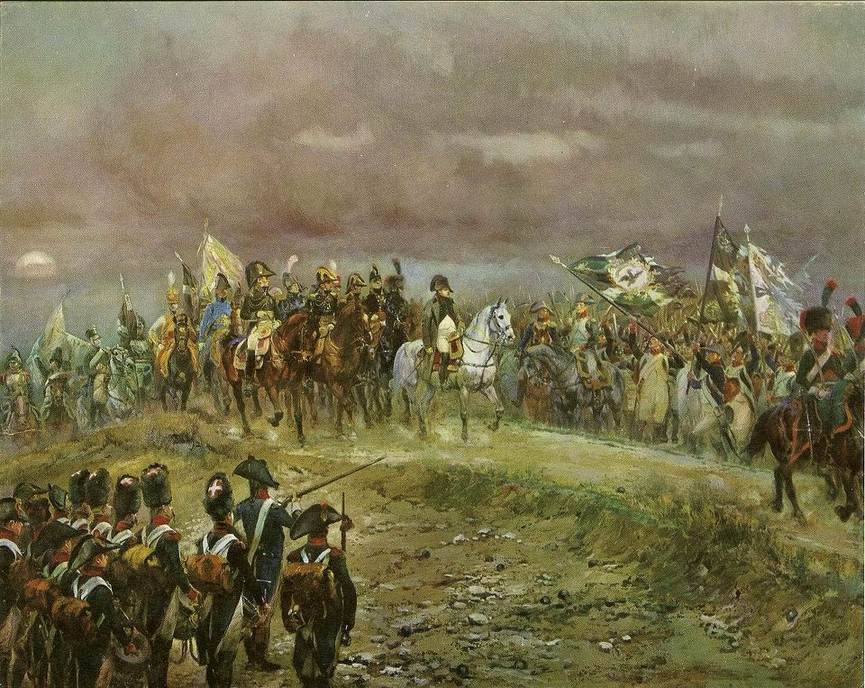
(고도이는 단순히 운이 안 좋았던 걸까요, 국제 정세에 대한 판단력이 제로였던 것일까요 ? 하필 나폴레옹이 저렇게 예나에서 대승을 거두던 바로 그 날 나폴레옹에게 도전하는 성명서를 발표하다니...)
이런 고도이의 도발 행위에 대해, 적어도 표면적으로는 나폴레옹으로부터 아무런 질책이나 항의가 없었습니다. 그러나 나폴레옹은 매우 뛰어난 기억력을 가진 인물이라는 것을 잘 알고 있던 고도이는 스스로 지은 죄를 알기에, 나폴레옹의 비위를 맞추느라 진땀을 흘려야 했습니다. 나폴레옹은 이런 긴장 관계를 또 기가 막히게 잘 착취했습니다. 나폴레옹은 트라팔가 이후 얼마 남지 않은 스페인의 잔존 해군 함대를 프랑스의 툴롱으로 이동시킬 것을 '부탁'했고, 또 프로이센에서 잡아들인 2만5천명 규모의 포로들을 '공사판에서 부려먹든 농사를 짓게 하든 맘대로 하시라'며 선물하듯 스페인으로 보내왔습니다. 사실상 이들 포로의 숙식 문제에 대한 부담을 스페인 측에 전가한 것이지요. 고도이가 이런 요구에 고분고분 따르자, 한술 더 떠서 스페인 정규 병력 중 A급 사단 1만5천명 정도를 스페인과는 아무 상관없는 저 머나먼 함부르크 지역으로 파견하여 베르나도트 지휘 하에 수비 업무를 맡도록 부탁해왔습니다. 고도이는 이에 대해서도 순순히 따르는 수 밖에 없엇습니다. 이 1만5천의 부대는 스페인에서 '북방 사단' (Division del Norte) 라고 불리는 정말 최정예 부대였고, 그 지휘관은 로마나 후작 (Marquis de la Romana, Pedro Caro y Sureda)이었습니다. 이 부대는 훗날 스페인과 프랑스의 전쟁에서 나름 드라마틱한 역할을 하게 됩니다. 물론 이외에도 대륙 봉쇄령에 따라 스페인의 각 항구를 철저히 폐쇄하라는 경제적 요구에도 굴복해야 했습니다.
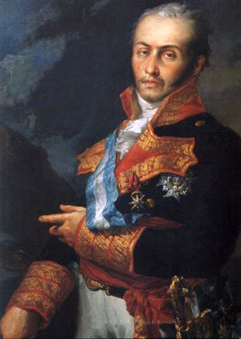
(로마나는 반도 전쟁 당시 웰링턴 공작으로부터 가장 존중받던 스페인 지휘관이었습니다. 그는 패트릭 오브라이언의 Aubrey & Maturin 시리즈에도 등장하는데, 머투어린의 먼 친척으로서 나중에 머투어린에게 엄청난 유산을 남겨 머투어린을 갑부로 만들어줍니다.)
이렇게 멍청한 수상을 둔 덕분에 스페인의 국방력과 경제력은 크게 손상되고 있었으나, 그와는 상관없이 고도이와 카를로스 4세 부부는 자신들만의 방탕하고 화려한 생활을 즐기며 잘 지내고 있었습니다. 그러던 고도이에게 나폴레옹이 의논할 것이 있으니 사절을 보내라는 일이 벌어집니다. 잔뜩 긴장하며 찾아간 고도이의 사절에게 나폴레옹이 내민 것은 엉뚱하게도 포르투갈을 나눠갖자는 제안이었습니다.
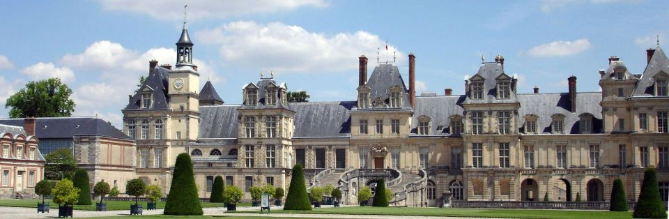
(운명의 퐁텐블로 궁전입니다. 왜 운명의 퐁텐블로인지는 다들 아실 겁니다...)
이탈리아 남부의 소왕국인 에트루리아 (Etruria)가 조약을 어기고 영국군을 끌어들였으므로, 나폴레옹은 의붓아들인 외젠의 부대를 동원해 영국군을 쫓아내고 에트루리아를 점령한 상태였습니다. 나폴레옹은 에트루리아 왕이 비록 그런 죄를 저질렀지만, 그 왕비가 스페인 왕족인 마리아 루이사 (Maria Louisa)이므로, 스페인 왕가의 체면을 생각하여 에트루리아 왕족에게 에트루리아 대신 다른 영토를 하사하겠다는 것이었지요. 물론 그 영토는 프랑스 땅이 아니라 바로 포르투갈의 일부였습니다. 게다가 썩어빠진 고도이의 인간성을 꿰뚫는 제안도 덧붙였습니다. 포르투갈을 3등분하여, 북부는 마리아 루이사에게 줘서 북부 루시타니아 왕국 (Kingdom of Northern Lusitania)을 만들고, 중부는 프랑스의 통제를 받는 꼭두각시 포르투갈 왕국으로 존속시키되, 나머지 하나는 알가르베스 공국 (Principality of the Algarves)으로 만들어 고도이 개인의 영지로 주겠다는 것이었습니다. 게다가, 스페인이 치루어야 할 댓가는 거의 없는 것이나 마찬가지였습니다. 프랑스군이 스페인을 통과하여 포르투갈로 쳐들어가도록 길만 내주면 된다는 것이었으니까요. 스페인군도 3개 사단을 동원하는 등 형식적으로 공동 작전을 펼치게 되어 있었습니다만, 그건 어디까지나 시늉일 뿐, 실제로 손에 피를 묻히는 일은 프랑스군이 수행하게 되어 있었습니다. 나폴레옹이 자기 구두 밑창을 혀로 핥으라고 해도 아마 따랐을 고도이로서는 굉장한 제안이 아닐 수 없었습니다. 그는 이 제안을 수락합니다. 이것이 1807년 10월의 퐁텐블로 (Fontainebleau) 조약이었습니다. 그리고, 사실 고도이로서는 달리 선택의 여지도 없었습니다. 그렇게 포르투갈을 침공하기 위한 프랑스 군단은 조약의 체결 여부에 상관없이 이미 스페인으로 진입한 상태였거든요. 그 부대의 지휘관은 '폭풍우' 쥐노(Jean-Andoche Junot)였습니다.
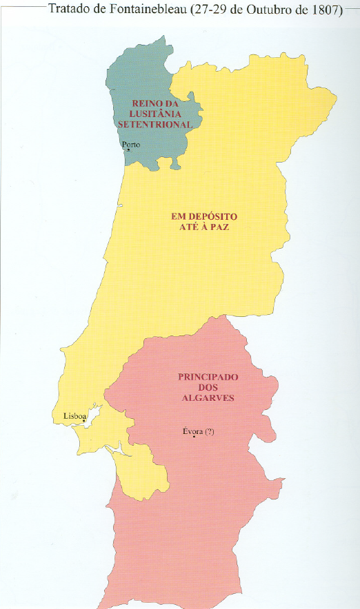
(퐁텐블로 조약에서 잠재적으로 삼등분된 포르투갈의 상상도입니다. 저 아래 분홍색 부분을 큼직하게 떼어 고도이에게 주게 되어 있었으나, 나폴레옹에게 정말 그럴 의사가 있기는 했는지 상당히 의심스러웠지요.)
원래 인맥으로 따지자면 쥐노가 나폴레옹의 첫번째 부하일 정도로, 나폴레옹과 쥐노의 관계는 무척이나 오래된 것이었습니다. 그리고 쥐노는 혁명 발발 이후 군에 입대하기 전에는 파리에서 법률을 공부하던 대학생일 정도로, 뱃 속에 먹물이 좀 들어간 엘리트 축에 속하는 사람이었지요. 1793년 툴롱 포위전에서 나폴레옹과 처음 만난 쥐노는 당시 계급이 하사관이었는데, 그렇게 나름 배운 사람이었기에 나폴레옹의 서기가 될 수 있었지요. 그리고 그 툴롱 포위전에서의 유명한 잉크와 모래 사건에서 볼 수 있듯이, 매우 용감한 인물이었습니다.
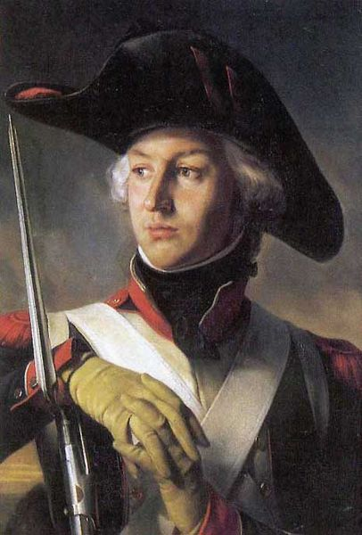
('폭풍우' 쥐노 장군입니다.)
그런데 여태까지 나폴레옹의 수많은 전투 장면에서, 여러분은 쥐노의 이름이 거론되는 것을 거의 보신 적이 없을 것입니다. 한마디로 나폴레옹의 인정을 받지 못해, 주요 지휘 보직을 얻지 못했다는 이야기지요. 나폴레옹은, 특히 황제가 되기 이전의 나폴레옹은 인물 평가에 뛰어난 사람이었는데, 자신보다 2살 어리고 또 아주 오랜 기간 함께 동고동락했던 쥐노에게 주요 보직을 맡기지 않았다는 것은 한마디로 쥐노에게 뛰어난 재능이 없었다는 것을 뜻합니다. 일설에 따르면 그는 나폴레옹의 제1차 이탈리아 침공 작전 때, 로나토(Lonato) 전투에서 머리에 심한 부상을 입었는데, 그때 이후로 성격이 변하여 성급하고 자제력이 떨어지는 불안정한 사람이 되었다고 합니다. 실제로 그의 말년은 정신 착란 이후 자살로 이어지는 불행한 것이었지요. 그의 별명이 폭풍우, 즉 Junot la Tempête (영어로 Tempest)라고 알려진 것도 그의 폭풍우같은 작전 때문이 아니라 예측이 불가능할 정도로 불안정한 그의 성질머리 때문이었습니다. 아무튼 나폴레옹의 고참 측근으로서, 마세나나 마르몽, 란, 다부, 심지어 네 같은 인물들이 승승장구하는 모습을 지켜보기만 해야 했던 쥐노로서는 속이 그다지 편치만은 않았을 것입니다.
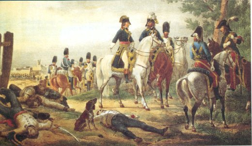
(1796년 로나토 전투입니다. 이 전투는 나폴레옹이 오스트리아군을 무찌른 전투입니다만, 정작 이 전투보다는 바로 같은 날 벌어진 오쥬로의 카스틸리오네 전투가 더 극적이었습니다.)
그러던 그에게 마침내 일개 군단의 지휘권이 주어진 것입니다. 갑자기 나폴레옹은 왜 그에게 군단 지휘권을 맡겼던 것일까요 ? 가장 큰 이유는 쥐노가 아우스테를리츠 전투 직전에 포르투갈 주재 프랑스 대사로 있었다는 점 때문이었습니다. 포르투갈 사정에 그래도 좀 익숙한 사람을 파견하는 것이 작전면에서나 정치외교적인 면에서나 더 유리했기 때문이었지요. 또 이렇게 쉬운 작전을 맡기면서 쥐노에게 '이번 작전을 잘 끝내면 원수 (marechal) 계급과 작위까지 주겠다' 라고 나폴레옹이 약속한 것을 보면 약간 뒤쳐지는 친구라도, 역시 옛 전우에게 공을 세울 기회를 주고 싶었던 것 같습니다.
쥐노에 대해서는 그 정도로 정리하고, 왜 나폴레옹은 쫓겨난 에트루리아 왕족들에 대한 측은지심이 뜬금없이 발동한 것인지 살펴보시지요. 물론 나폴레옹은 그런 왕족 나부랭이들에게는 아무런 관심이 없었습니다. 나폴레옹이 머나먼 유럽 서쪽 끄트머리의 포르투갈을 침공하려한 것은 바로 영국 때문이었습니다. 당시 유럽에서 중립국이라고 할 만한 것은 덴마크와 포르투갈 뿐이었습니다. 그 중 덴마크는 프랑스와 러시아의 공동 협박에 못이겨 프-러 동맹 쪽으로 사실상 넘어오기 직전이었는데, 울고 싶은데 뺨을 때려준다는 말이 딱 맞는 상황이 벌어졌습니다. 덴마크가 프-러 동맹으로 넘어가기 직전이다 라는 첩보를 접한 영국이 선제 공격을 한 것입니다.
7월 말, 영국은 덴마크에게 '너희를 프랑스로부터 보호해줄테니 20여척의 전함으로 구성된 너희 함대를 우리에게 넘겨라. 우리가 잘 보관했다가 나폴레옹이 몰락하면 그때 돌려주마' 라는 제안 또는 협박을 했습니다. 거의 동시에, 나폴레옹도 덴마크에게 '영국과 전쟁을 선포하라, 아니면 베르나도트가 덴마크의 남쪽 영토인 홀슈타인 (Holstein)을 들이칠 것이다' 라고 협박을 가했습니다. 이 상황에서, 덴마크는 양측 모두를 거절하고 중립을 지키려 했습니다. 그러나 이런 고래들의 싸움 속에서 새우등이 무사할 턱이 없었습니다. 실력행사를 먼저 시작한 것은 영국이었습니다. 영국은 20여척의 전함과 2만5척의 병력을 동원하여 코펜하겐을 들이쳤고, 지난 1801년 제1차 코펜하겐 전투 때와는 달리, 코펜하겐 시내의 민간인 거주 지역에 무차별 폭격을 퍼붓는 강수를 두었습니다. 1807년 9월 2일부터 3일간 가해진 이 폭격에서, 코펜하겐 시내에서 수천 채의 건물이 불타고 민간인 희생자가 195명 사망, 768명 부상이라는 대참사를 낳았습니다. 결국 덴마크는 조건부 항복을 해야했고, 덴마크 함대는 거의 고스란히 영국 해군의 수중에 넘어갔습니다.
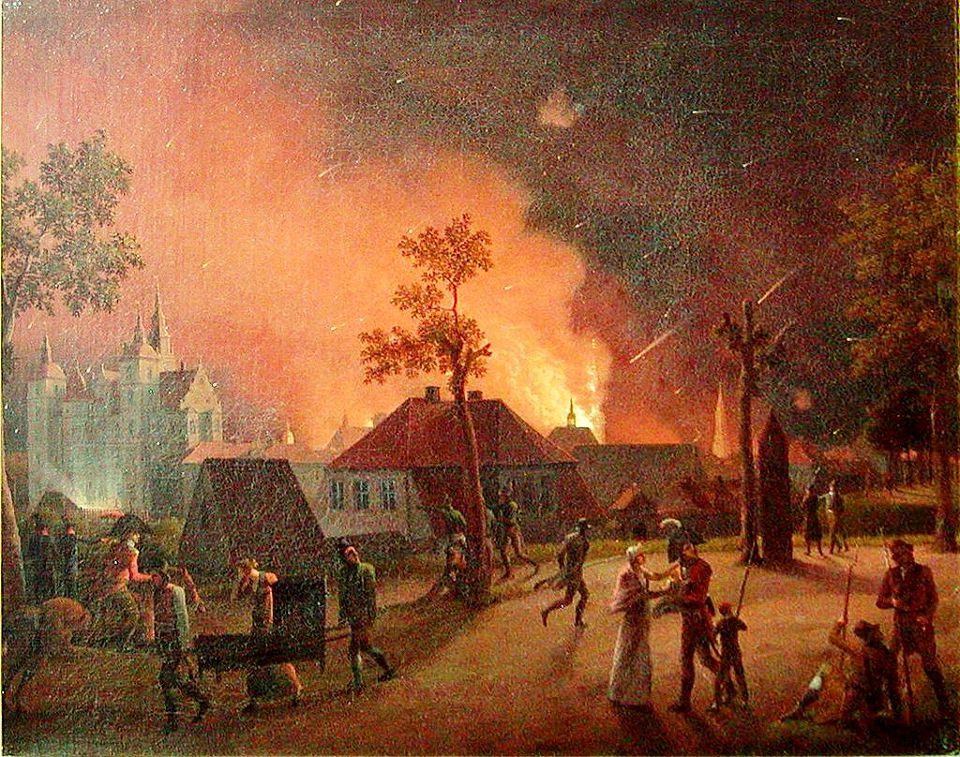
(1807년 제2차 코펜하겐 전투 당시 영국 함대의 폭격을 받던 코펜하겐 시민들의 모습입니다. 제2차 세계대전 당시에나 본격적으로 수행된 민간인 구역에 대한 무차별 폭격의 시조가 되는 사건입니다.)
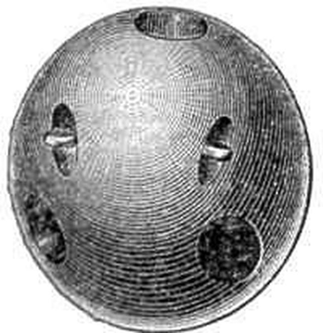
(코펜하겐 폭격에는 박격포함이 동원되어 이런 carcass라는 소이탄을 포함한 각종 포탄과 로켓탄을 수천발 쏘아댔습니다. 이 carcass라는 소이탄은 큰 구멍이 군데군데 뚫린, 속이 빈 철제 케이스로 되어 있었고, 그 속에는 흑색화약, 초석, 유황, 수지, 잘게 부순 유리, 섬유질, 핏치와 송진유 등을 섞어 만든 내용물을 채워넣은 것이었습니다.)
영국은 영국의 해양 안보에 대한 잠재적 위협이 될 수 있었던 덴마크 함대가 나폴레옹 손으로 넘어가는 것을 막을 수 있어서 목적을 달성했다고 좋아했겠습니다만, 대신 덴마크 전체는 이제 별 다른 선택의 여지가 없이 영국과 원수지간이 되어 나폴레옹 편에 서게 되었습니다. 일이 이렇게 되자, 나폴레옹으로서도 손 안 대고 코를 푼 격이 되었지요. 어차피 20여척의 전함으로 영국 해군의 제해권에 도전할 수는 없었거든요. 덴마크가 반영 동맹에 제발로 들어오게 되자, 이제 유럽 대륙에서 남은, 유일하게 영국 선박에게 항구를 개방하는 나라는 포르투갈 딱 하나만 남게 된 것입니다.
원래부터 포르투갈과 영국의 관계는 유럽에서 가장 오래된 공식 우호조약인 1386년 윈저 조약부터 시작된 것일 정도로 공고하고도 오래된 것이었습니다. 이 관계는 제2차 십자군 시대로까지 거슬러 올라가는데, 그때 예루살렘으로 가던 영국군이 포르투갈 왕위를 둘러싼 내분에 개입해서 포르투갈 왕가와 깊은 인연을 맺었다고 하지요. 특히 힘센 옆나라인 스페인의 침공 위협에 시달리던 포르투갈로서는 자신을 도와줄 힘센 친구가 필요했기 때문에 영국과의 우호 관계에 더욱 매달릴 수 밖에 없었습니다. 나폴레옹 전쟁 즈음에 이르러서는 포르투갈은 정치 경제적으로 대영국 의존도가 심해졌습니다. 당시 영국을 포함한 유럽 상류층은 대부분 자녀들에게 프랑스어를 가르친 것에 비해, 유독 포르투갈의 귀족층 자녀들은 영어부터 배울 정도였습니다. 당시 포르투갈의 주요 산업 중 하나가 영국으로 포르투갈 특산품인 포트 와인 (Port wine, Porto)을 수출하는 것이었습니다. 사실 포트 와인의 탄생 자체가 영국 때문이었다고 합니다. 즉, 영국까지 먼 뱃길로 수출할 때 포도주가 상하지 않도록 알코올 성분을 높이기 위해 포도주에다 비숙성 브랜디(포도 증류주)를 첨가했는데, 이것이 술고래인 영국인들의 기호에 딱 맞았다고 합니다. 그래서 이 포도주가 주로 수출되던 Oporto 항구의 이름을 따서 Porto, 또는 포트 와인이라고 불리게 되었다네요. 당시 제대로 된 영국식 식사는 로스트 비프 등의 식사를 하고, 파이나 푸딩 등의 디저트를 먹은 후, 포트 와인으로 입가심을 하는 것이 거의 정례처럼 굳어질 정도였습니다.
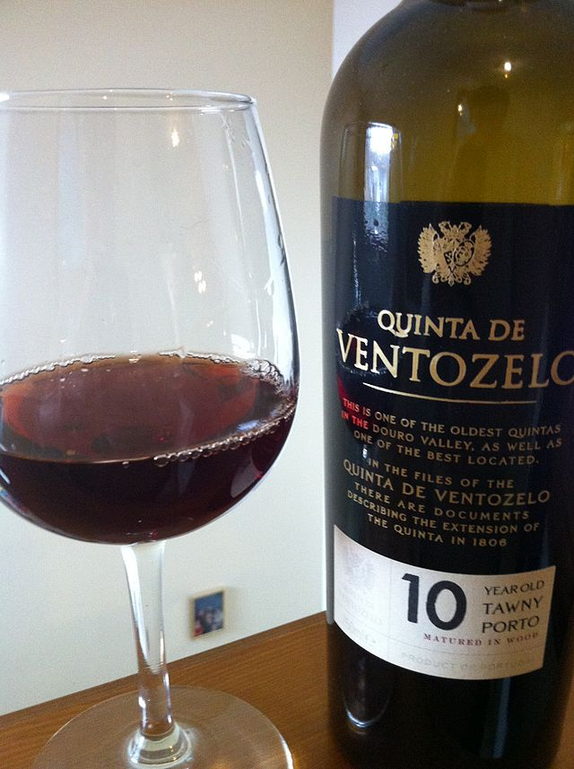
(영국 신사들의 필수품 포트 와인입니다.)
이런 포르투갈에게, 나폴레옹은 '영국과 단교하고 대륙 봉쇄령에 참여하라'고 강요합니다. 포르투갈로서는 도저히 받아들일 수 없는 요구조건이었지요. 가령 중국이 우리나라에게 '미국과 단교하라'라던가, 혹은 일본이 우리나라에게 '중국과의 교역을 중단하라'라고 요구한다면 경제적 안보적으로 우리나라는 받아들일 수 없는 것과 동일한 것입니다. 나폴레옹도 그런 사정을 잘 알고 있었기 때문에, 포르투갈을 대륙 봉쇄령에 끌여들여 반영국 경제 포위망을 완성하기 위해서는 포르투갈 침공이 불가피하다고 보았던 것입니다. 실제로 이런 프랑스의 요구에 대해서, 실질적인 포르투갈의 지배자였던 당시 섭정이던 조아오 4세 (Dom João VI, 영어로는 그냥 John IV)는 영국과 국교는 단절하겠으나, 영국인들을 체포하고 영국 선박과 상품을 압류할 수는 없다 정도의 반응을 보였습니다. 프랑스는 이에 대해 대사 소환이라는 초강경 대응을 합니다.
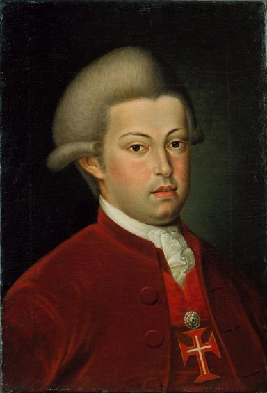
(섭정 왕자 시절의 조아오 4세입니다.)
그러나 포르투갈은 이베리아 반도 서쪽 끝에 붙은 나라였고, 포르투갈 침공을 위해서는 스페인을 통과할 수 밖에 없었습니다. 바닷길은 영국 해군이 막고 있었으니까요. 원래 남의 나라를 관통하여 군대를 파병하는 것은 정치외교적으로 굉장히 난처한 일입니다. 아무리 얌전히 통과한다고 해도, 언제 죽을지 모르고 거칠기 짝이 없는 병사들이 도보로 통과하면서 현지인들에게 피해를 안 끼칠 수가 없거든요. 그런데 스페인을 사실상 통치하던 인물들이 무골충 카를로스 4세에, 탐욕과 부패로 물든 '평화의 왕자' 고도이였으니 나폴레옹으로서는 일이 이렇게 잘 풀리기도 어려웠던 것이지요. 퐁텐블로 조약을 통해 스페인 내부로의 프랑스군 진입에 대한 동의를 얻은 나폴레옹은 이미 스페인에 진입한 쥐노에게 더욱 행군 속도를 높이라고 재촉을 했습니다.
왜 나폴레옹은 무엇보다 행군 속도에 열을 올렸을까요 ? 그리고 애초에 왜 퐁텐블로 조약이 체결되기도 전에 스페인 국내로 병력을 진주시키는 초강수를 두었을까요 ? 이유는 포르투갈의 해외 식민지, 브라질 때문이었습니다. 포르투갈은 애초에 워낙 작은 나라여서, 그 자체로는 프랑스군에게 저항하기가 어려웠습니다. 그러다보니, 이런 프랑스군의 침공에 대해 포르투갈 왕정이 택할 수 있는 것은 부질없이 상징적인 저항 이후 항복하는 것이든가, 아니면 바리바리 보따리를 싸서 배를 타고 대서양 건너 식민지인 브라질로 튀는 것이었습니다. 누가 봐도 포르투갈이 택할 것은 바로 후자, 즉 브라질로의 도주가 될 가능성이 높았습니다. 이건 나폴레옹으로서는 꼭 막아야 할 일이었습니다. 포르투갈을 점령하여 유럽 대륙과의 교역항을 모두 폐쇄한다고 하더라도, 영국이 브라질과 교역길을 뚫는다면 대륙 봉쇄령의 효과가 크게 떨어질 수 있기 때문이었습니다. 따라서 나폴레옹은 포르투갈 땅덩어리보다도, 포르투갈의 왕정 자체를 사로잡아 영국과의 단교를 강요하는 것을 훨씬 중요하게 보았습니다.
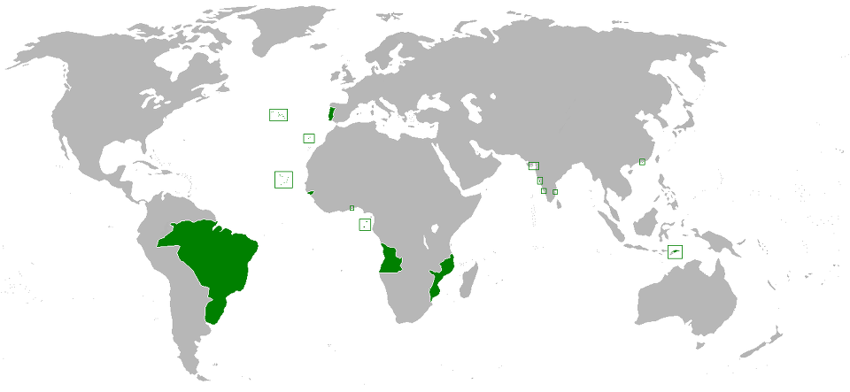
(1800년 경의 포르투갈의 식민지 지도입니다. 특히 저 브라질은 영국이 통상길을 열려고 무척 노력하는 땅이었습니다.)
문제는 속도였습니다. 아무리 이삿짐이 많다고 하더라도, 아무래도 리스본에 앉아 있다가 항구로 가 배를 타는 것이, 피레네 산맥을 넘고 드넓은 스페인 평원을 가로질러 포르투갈의 방어진을 돌파하고 리스본을 점령하는 것보다는 훨씬 빠를테니까요. 그래도 일단 최선을 다 해봐야 했는데, 일단 프랑스군의 장기가 빠른 행군이니만큼, 전혀 가능성이 없는 것은 아니었습니다.
쥐노의 부대가 서부 스페인 살라망카 (Salamanca)에 진입한 것은 11월 12일, 약 480km를 25일만에 주파한 셈이었습니다. 하루에 19km 약간 넘게 이동한 셈인데, 이는 당시 프랑스군의 평균 이동 거리였던 하루 25km에 못 미치는 수준이었습니다. 아무래도 피레네 산맥을 넘는데 시간이 많이 걸렸고, 또 쥐노의 부대는 독일 무대에서 활약했던 정예 그랑 다르메 (Grande Armee)보다는 질이 많이 떨어지는 2선급 부대였기 때문에 그랬던 것 같습니다. 진짜 문제는 그 다음에 생겼습니다. 이런 속도로는 안되겠다고 판단한 나폴레옹으로부터 쥐노가 추가 명령을 전달받은 것입니다. 나폴레옹은 정상적인 길이었던 알메이다 (Almeida)와 코임브라 (Coimbra)를 통과하는 320km 경로 대신 훨씬 험하지만 대신 훨씬 짧은, 알칸타라 (Alcántara)로부터 타구스 (Tagus) 계곡을 통과하는 190km 경로를 택하도록 지시했습니다. 특히 이 경로에는 주민들이 별로 없어 현지 식량 조달이 매우 곤란했습니다. 하지만 나폴레옹은 "병사들은 사막에서라도 먹을 것을 찾을 수 있다" 라며 무작정 강행군을 강요했습니다.
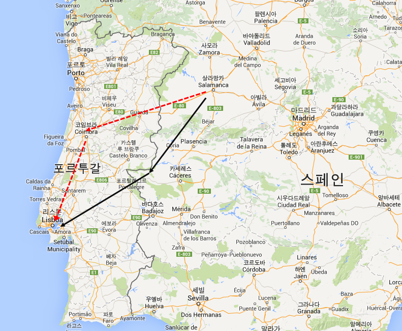
(붉은색 점선이 원래의 정상적인 평탄한 길이고, 검은색 실선이 나폴레옹이 강요한 지름길입니다. 이렇게 보니 뭐 별로 큰 차이가 없어 보이는데, 아마 살라망카에서 코임브라로 가는 길이 실제로는 저렇게 직선이 아니고 많이 굽이치는 모양이었나 봅니다.)
결국 이때부터의 행군은 병사들에게는 재난이었습니다. 하필 이때부터는 늦가을의 차가운 비까지 며칠동안 계속 내려 고달픈 병사들을 더욱 비참하게 만들었습니다. 결과적으로 병사들의 25%가 낙오하고, 군마의 50%가 죽어버리는 큰 희생을 치뤄야 했습니다. 이런 개고생 끝에 쥐노는 11월 19일, 드디어 포르투갈 국경을 넘게 됩니다. 이제부터는 탄탄대로였을까요 ? 천만에 콩떡이었습니다. 스페인 도로 사정도 열악했지만, 스페인보다 더 가난한 나라였던 포르투갈의 도로 사정은 정말 최악이었습니다. 덕분에 쥐노의 부대가 11월 23일 아브란테스(Abrantes)에 진입할 때, 전체 부대의 50%만 대오를 이루고 있었고, 나머지는 낙오했거나 거지꼴로 먹을 것을 찾아 들판을 헤매고 있었습니다.
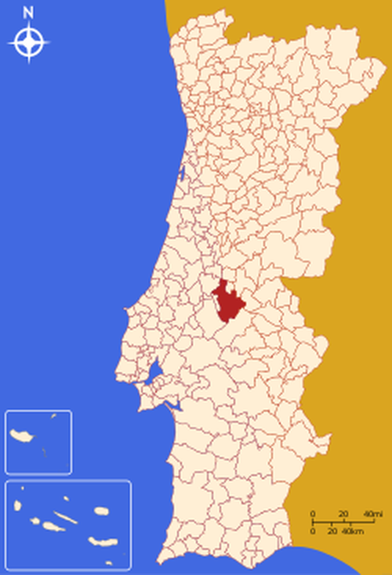
(아브란테스와 그 위치입니다. 포르투갈의 딱 중앙에 위치해 있습니다.)
'폭풍우' 쥐노의 부대는 이렇게 거지꼴로 절뚝거리며 오고 있었으나, 정작 이들을 맞이하는 포르투갈 궁정은 발칵 뒤집혀 벌벌 떨고 있었습니다. 설마 공갈이겠지, 그냥 엄포겠지 라고 생각했는데, 그 전설적인 프랑스군이 정말로 포르투갈을 향하여 스페인을 횡단하고 있다는 소식이 날아온 것입니다. 당시 섭정이던 조아오 왕자는 10월 20일 등 떠밀려 영국에 선전포고를 했고, 그래도 쥐노의 부대의 진격이 멈추지 않자 11월 8일에는 포르투갈 국내의 영국인들을 체포하기 시작했습니다. 그래도 쥐노의 부대는 진격을 계속했고, 포르투갈 궁정이 깜짝 놀랄 속도로 국경을 넘었습니다. 애초에 프랑스군과 싸운다는 생각은 거의 하지 못했습니다. 당시 포르투갈군은 서류상으로는 2만명이 넘었으므로 쥐노의 2진급 프랑스군 잔존부대 1만5천명과 충분히 싸워볼 만 했으나, 스페인과 별반 차이 안 날 정도로 부패했던 귀족 출신 포르투갈 장교들이 존재하지도 않는 병사들을 명단에만 올리고 그 보급품과 급여를 착복하고 있는 것이 현실이었기 때문이었습니다.
이런 상황에서, 리스본 앞바다에 영국 소함대가 나타나 리스본 항구의 봉쇄를 선언했습니다. 영국에 대해 선전포고를 했으니 뭐 어쩌면 당연한 결과였습니다. 진퇴양난에 빠진 조아오 섭정은 사절을 보내 쥐노의 진격을 늦추려 해보았으나, 이는 역효과를 낼 뿐이었습니다. 굴욕적인 조건에도 OK를 외치는 사절의 태도를 보고 포르투갈에게 저항 의지가 전혀 없다는 것을 눈치챈 쥐노가, 뭉기적 거리는 본대를 놔두고 약 1500명의 정예병만을 따로 뽑아 전속력으로 달리기 시작한 것입니다. 마침내 11월 30일 리스본에 지친 몸을 이끌고 거지꼴로 나타난 이들에겐 대포 1문조차 없었고, 심지어 연이어 내리는 늦가을비에 탄약포까지 흠뻑 젖어 총 한방 제대로 쏠 수 없는 형편이었습니다. 그러나 아무 상관없었습니다. 리스본 정부는 아무런 저항을 하지 않았거든요. 결국 프랑스군은 아무 저항 없이 리스본에 무혈입성할 수 있었습니다.
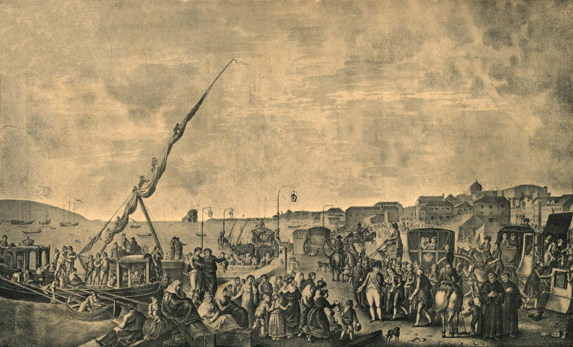
(쥐노의 침공을 피해 리스본 항구를 탈출하는 왕족과 귀족들의 모습입니다.)
그러나 나폴레옹이 두려워하던대로, 이미 조아오 섭정을 포함한 포르투갈 궁정은 모두 배편으로 항구를 빠져나간 후였습니다. 쥐노가 리스본에 입성하기 바로 하루 전날, 이들은 15척의 군함과 20여척의 수송선에 바리바리 짐을 싸들고 영국 함대의 호위 하에 브라질로 출항했던 것입니다. 알고보면, 아무리 포르투갈 국민들이 무기력하다고 해도, 프랑스 침공군에 대해 총 한방 쏘지 않고 완전히 무저항으로 나온 것도 이해가 가는 행동이었습니다. 리스본 시민들은 자신들이 떠받들던 왕족들이 지들만 살겠다고 온나라 국민들을 버려두고 브라질로 탈출해버렸다는 것을 믿을 수가 없어서 대공황 상태에 빠져 있었던 것입니다. 이렇게 국민들은 왕족들에 대한 배신감으로 부들부들 떨고 있엇지만, 탈출한 왕족들로서도 이 탈출이 나름 아슬아슬했던 것이, 모든 것을 포기하고 오로지 스피드에 전력을 기울였던 쥐노의 행군 속도에 놀란 왕족들은 온갖 귀중품이 실린 14대의 짐마차를 항구 부둣가에 내버려 둔 채로 허둥지둥 출항을 해야 할 정도였습니다.
아무튼 쥐노는 졸지에 닭쫓던 개 신세가 된 셈이었지요. 이렇게 나폴레옹은 포르투갈 침공의 주목적을 달성하지 못하고 말았습니다. 그러나 역시 나폴레옹은 으리으리를 중요시하는 사람이라, 그럼에도 불구하고 이때의 공로를 인정하여 쥐노에게 아브란테스 공작(Duc d'Abrantès)의 작위를 내려줍니다. 다만 절반의 성공이었으니 포상도 절반만 하여 원수직은 내리지 않았지요. 쥐노가 포르투갈 궁정 식구들을 놓친 댓가는 상당했습니다. 조아오 왕자와 함께 무려 1만5천명의 귀족, 대상인, 그리고 그 식솔들이 배를 타고 브라질로 탈출했는데, 이들이 바리바리 싸들고 간 화물의 대부분은 금화와 은화였습니다. 이들이 가져단 금화와 은화는 포르투갈이 보유한 전체 경화의 거의 절반에 해당하는 거액이었습니다. 나폴레옹은 이렇게 점령한 포르투갈에서도, 다른 점령지에서처럼 돈을, 그것도 1억 프랑을 뜯어낼 것을 지시했는데, 쥐노가 포르투갈을 아무리 박박 긁어도 나폴레옹에게 보낼 돈은 커녕 자신의 부대 병사들에게 급여를 지불할 돈조차 모을 수가 없었습니다.
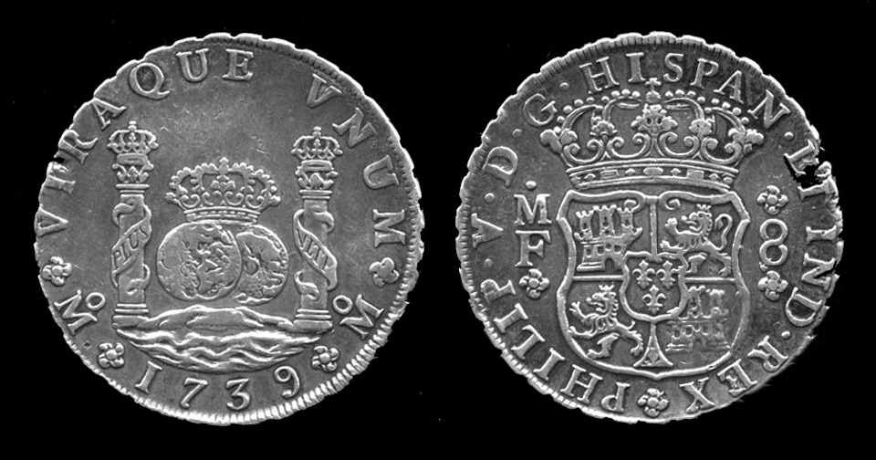
(항상 결국 문제는 돈이지요. 18세기 초반 스페인의 은화입니다.)
남아있는 포르투갈 귀족들과 관리들은 프랑스군에 대해 별다른 저항을 하지 않았습니다만, 포르투갈 민중은 좀 달랐습니다. 최초의 저항은 리스본을 점령한지 얼마 안되어 쥐노가 관공서 건물에 프랑스 국기를 게양하자마자 나왔습니다. 리스본 시민들이 프랑스의 삼색기가 올라간 것을 보고 작은 폭동을 일으켰던 것입니다. 이는 기병대가 출동하여 간단히 제압했습니다만, 쥐노가 나폴레옹에게 보낼 돈을 마련하기 위해 무거운 세금을 부과하자, 온 나라의 민중들이 들썩거리기 시작했습니다. 상황이 점점 악화되고 있었습니다. 한가지 다행인 점은 포르투갈의 사회 지도층이라고 할 만한 인간들이 모조리 브라질로 도망쳤기 때문에, 그 민중 봉기를 이끌 인물이 없었다는 점이었습니다.
하지만 진짜 문제는 포르투갈이 아니라 동쪽의 스페인에서 벌어지고 있었습니다. 곧 쥐노는 포르투갈에 갇힐 운명이었습니다.